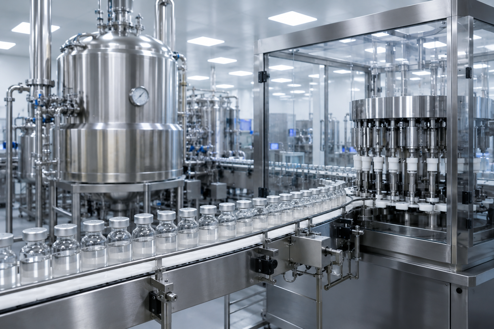
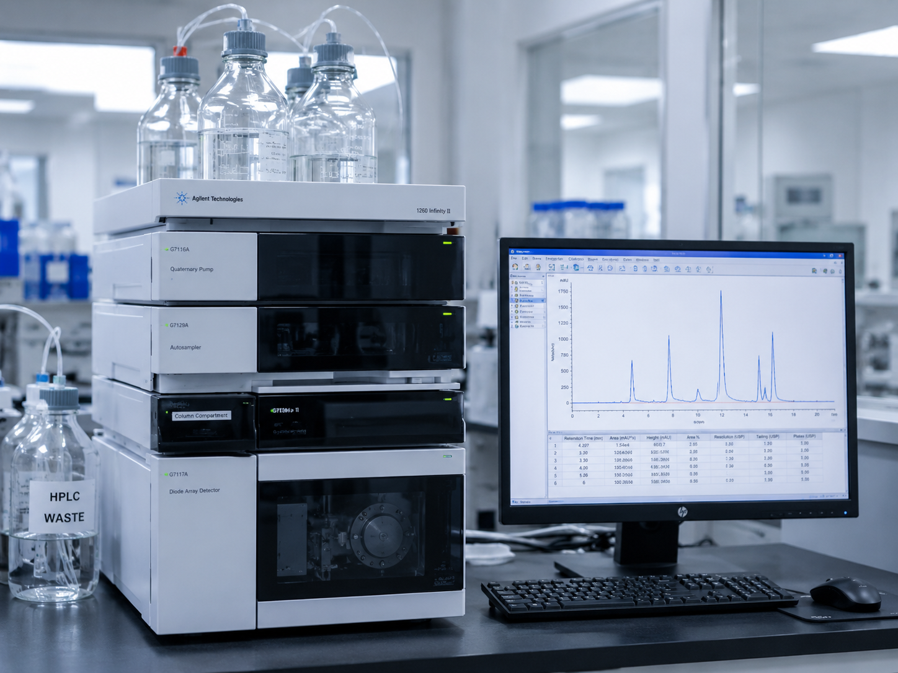
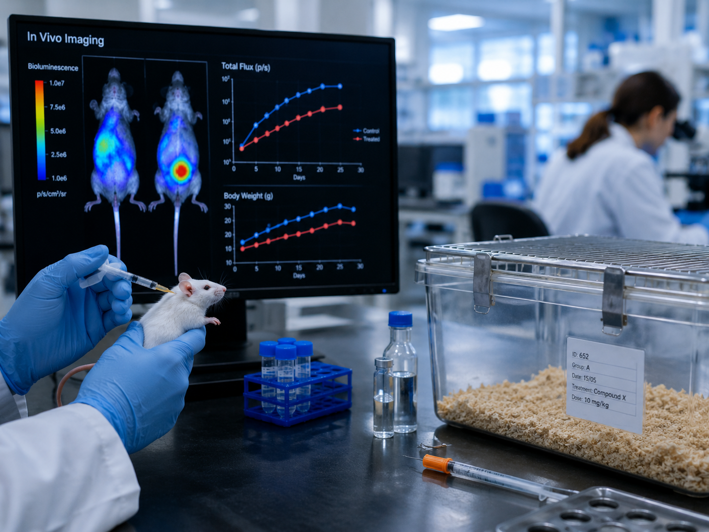

SCIENTIFIC STORY
From Oral Syrup to Topical Therapy

Industrial Production
I followed the industrial manufacturing process of HISTAGAN® syrup at SAIDAL.

Quality Control
Physicochemical and microbiological quality control, including HPLC-based analytical evaluation.
Research Idea
Repurposing the same active ingredient from oral administration to a topical dosage form.

In Vivo Evaluation
Evaluation in a DNCB-induced atopic dermatitis model using lesion scoring and scratching behaviour.